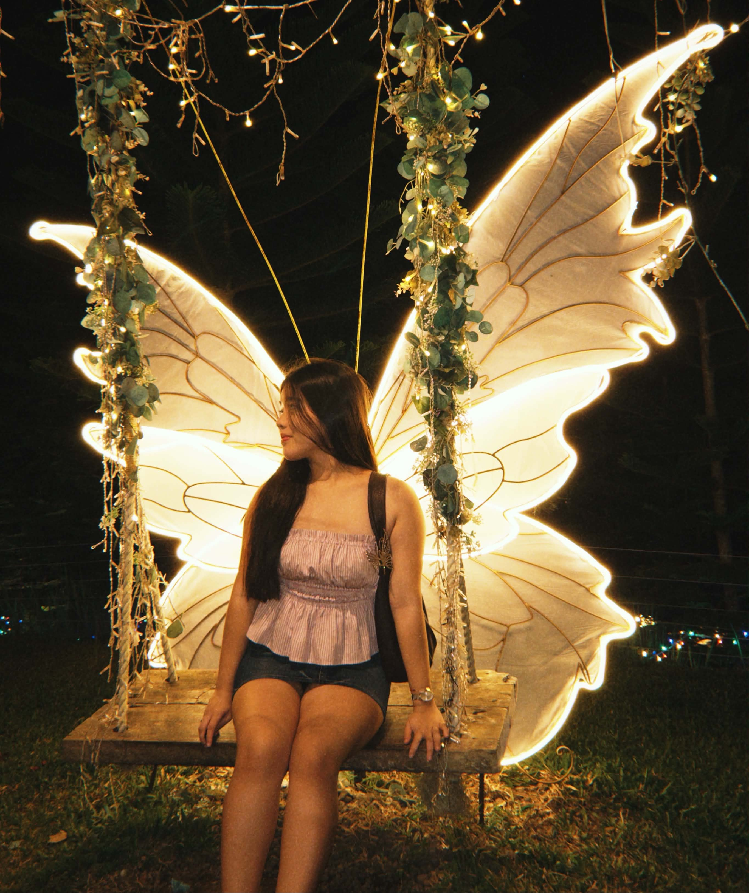

![]()
Hello! 🌟
A few quick facts about me
| Preferred name | Aly or Alyza |
|---|---|
| Program | BS Computer Science (BSCS) |
| Year level | First year student, 1A |
| School | Bicol University College of Science |
About Me

My full name is Alyza Julie O. San Jose. I am a first-year BSCS student at Bicol University. I love music and reading because they make me feel comfort, and I love discovering new things. I also enjoy travelling, seeing new places, and learning something new every day. Computer Science was not my first choice, because I did not qualify for the course I originally wanted. But I chose to see it as a redirection, not a setback, and I am open to learning, growing, and discovering where it leads me.
My Path Into Computing
My road to Computer Science was not a straight one. Nursing was my first choice, and I did not qualify for it. I could have seen that as the end of the road, but I chose to look at the options I still had. Computer Science was the practical choice, and it is a field that keeps opening new doors.
- My plans changed. Things did not go the way I expected, and I had to decide what to do next.
- I chose practicality. I looked at where I could grow and build a good future, and Computer Science stood out.
- I chose to begin again. I decided to see this as a redirection, not a setback.
Now I am learning how computers and programs work, one lesson at a time. I do not know everything about where this path will lead me, but I am willing to learn, to grow, and to make the most of it.
My Top 3 Goals
- Graduate
- Travel
- Achieve the things I want to achieve
My Favorites
One website I enjoy visiting is Medium. Every time I open it, something in me softens. I love reading, and here I feel seen, as if someone finally put my unspoken feelings into words. The hours slip by, but I never regret them, because this is where my heart feels at home.
Skills I Am Building
I am still a beginner, but these are the Computer Science skills I am learning step by step.
- HTML (building the structure of a webpage)
- CSS (adding colors and designs)
- Basic programming logic
- C programming
- Problem solving
My Favorite Music
Music is where I feel most like myself. These are the artists I keep coming back to.
The 1975
- Falling For You
- Robbers
- Somebody Else
- About You
Clairo
- Bags
- Sofia
- Pretty Girl
LANY
- you!
- Thick and Thin
- XXL
Taylor Swift
I like all of her songs, especially:
- Dear Reader
- The Archer
- This Love
My Reading Corner
I like a lot of books, but I lean more toward romcom and fantasy, and I enjoy other genres too.
Genres I Love
- Romcom
- Fantasy
- And many more!
Why Reading Comforts Me
Reading is the one thing that comforts me whenever I am sad. When my feelings feel too heavy, a book gives me somewhere else to go for a while. I can step into another world, get lost in a story, and rest from whatever is bothering me. Sometimes a character feels the same way I do, and it reminds me that I am not alone. Other times, a happy ending gives me hope that things can get better. A good book feels like a quiet friend who stays with me until I feel okay again.
Places I Want to Visit
I would love to travel around the Philippines, either the whole country or some parts of it, and then go to other countries too.
My Dream Destinations
- Switzerland
- Korea
- Paris
- Japan
- New York
Fun Fact About Me
I like spicy and sour foods! I like sweets too, but not too much.
Reflection
Making this webpage was hard for me because it was my first time, but the easiest part was writing about myself, since I already knew what to put in my hobbies, goals, and favorites. The confusing part was the table and the layout, especially organizing the table and putting my picture beside my text. I'm thankful for the tutorials I watched because they helped me understand it, and even though I was confused at times, I still made it in the end. If I could improve one thing, I would improve my design by adding more colors and making it look better on my phone.